<div class="w-screen h-screen flex flex-col items-center">
  <div
    class="overflow-hidden relative flex flex-col justify-between w-[90%] sm:h-[80%] h-[calc(93vh-3rem)] mt-[1.5rem] bg-slate-100 bg-opacity-70 backdrop-blur-sm p-3 rounded-[10px]"
  >
    <div>
      <div class="text-primary">
        <h1 class="text-4xl">Hello, {{ userDataService.userName }}</h1>
        <span *ngIf="numberOfTasks !== 0" class="text-2xl"
          >You have {{ numberOfTasks }}
          <span *ngIf="numberOfTasks === 1">task</span>
          <span *ngIf="numberOfTasks !== 1">tasks</span>
        </span>
        <span *ngIf="numberOfTasks === 0" class="text-2xl"
          >You don't have any tasks
        </span>
      </div>
      <mat-chip-listbox
        aria-label="task filtering"
        class="flex my-3 w-full gap-3 text-[#8f8fa1] text-sm sm:text-ba"
      >
        <mat-chip-option selected (click)="filter = 'all'">All</mat-chip-option>
        <mat-chip-option (click)="filter = 'active'">To do</mat-chip-option>
        <mat-chip-option (click)="filter = 'done'">Done</mat-chip-option>
        <mat-chip-option (click)="filter = 'important'"
          >important</mat-chip-option
        >
      </mat-chip-listbox>
      <div class="flex flex-col justify-between">
        <div class="flex w-full justify-center">
          
        </div>
        <ul
          class="max-w-full sm:max-h-[calc(100vh-26rem)] max-h-[calc(100vh-24rem)] overflow-y-scroll box-border flex flex-col gap-3 py-3"
          [ngSwitch]="filter"
        >
          <ng-container *ngSwitchCase="'all'">
            <li *ngFor="let i of tasks">
              <app-item
                (remove)="removeItem(i)"
                (saveToLocalStorage)="saveToLocalStorage()"
                [item]="i"
              ></app-item>
            </li>
          </ng-container>
          <ng-container *ngSwitchCase="'active'">
            <li *ngFor="let i of tasks.filter(tasksfiltering())">
              <app-item
                (remove)="removeItem(i)"
                (saveToLocalStorage)="saveToLocalStorage()"
                [item]="i"
              ></app-item>
            </li>
          </ng-container>
          <ng-container *ngSwitchCase="'done'">
            <li *ngFor="let i of tasks.filter(tasksfiltering())">
              <app-item
                (remove)="removeItem(i)"
                (saveToLocalStorage)="saveToLocalStorage()"
                [item]="i"
              ></app-item>
            </li>
          </ng-container>
          <ng-container *ngSwitchCase="'important'">
            <li *ngFor="let i of tasks.filter(tasksfiltering())">
              <app-item
                (remove)="removeItem(i)"
                (saveToLocalStorage)="saveToLocalStorage()"
                [item]="i"
              ></app-item>
            </li>
          </ng-container>
        </ul>
      </div>
    </div>

    <div
      class="mx-3 mb-[0.85rem] rounded-[10px] justify-between shadow-md bg-white input-field relative"
    >
      <span class="absolute bottom-2 left-0 flex items-center pl-2">
        <svg
          class="h-6 w-6"
          fill="none"
          stroke="#808080"
          stroke-width="1.5"
          viewBox="0 0 24 24"
          xmlns="http://www.w3.org/2000/svg"
          aria-hidden="true"
        >
          <path
            stroke-linecap="round"
            stroke-linejoin="round"
            d="M12 4.5v15m7.5-7.5h-15"
          ></path>
        </svg>
      </span>
      <input
        #newItem
        type="text"
        placeholder="Add task"
        (keyup.enter)="addItem(newItem.value); newItem.value = ''"
        class="bg-[#e0e0e0] placeholder:italic pr-2 pl-10 py-2 rounded-t-[10px] border border-slate-300 focus:outline-none focus:border-primary hover:border-primary w-full rounded-[10px]"
      />
    </div>
  </div>

  <div class="flex mt-[0.75rem] justify-center items-center">
    <button
      routerLink="/"
      class="p-3 rounded-[50%] bg-slate-100 bg-opacity-70 backdrop-blur-sm sm:hidden block"
    >
      <svg
        class="w-6 h-6"
        fill="none"
        stroke="currentColor"
        stroke-width="2"
        viewBox="0 0 24 24"
        xmlns="http://www.w3.org/2000/svg"
        aria-hidden="true"
      >
        <path
          stroke-linecap="round"
          stroke-linejoin="round"
          d="M15.75 19.5L8.25 12l7.5-7.5"
        ></path>
      </svg>
    </button>
  </div>
</div>
